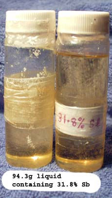

SbCl3, Antimony Trichloride also known as Antimonous Chloride
SbH3 is highly toxic, be aware of this fact and do all Sb + acid reactions with adequate ventilation.
Properties:
Colorless, fuming, crystalline, caustic, soft masses. (hence formerly called Butter of Antimony), which melt at 73° and boil at 223° and which absorbs water from the air and is deliquescent.
Antimony Trichloride is soluble in hydrochloric acid; if this solution or solid Antimony
Trichloride is treated with considerable water,
a white crystalline precipitate of Antimony Oyxchloride, SbOCl, is obtained.
This was formerly called Algarot powder. It contains various amounts of Antimony Trioxide according to the method of preparation:
2SbCl3 + 3H20 => Sb2O3 + 6HCl or SbCl3 + H20 => SbOCl +2HCl.
The Sulfide was commonly used as the crude form was obtained directly from the ore, the oxides are much more common today. The Hydrochloric acid needs to be pretty strong. A more modern preparation has you concentrate the solution, add concentrated(35%) Hydrochloric acid, and distill that. The HCl removes remaining water as the 20% azeotrope, the excess HCl keeps the SbCl3 from hydrolyzing.
SbCl3 can also be made from the metal and Chlorine gas.
Preparation
By dissolving Antimony Sulphide or Antimony Trioxide in Hydrochloric acid:
Sb2S3+6HCl => 2SbCl3 + 3H2S
Sb2O3 + 6HCl => 2SbCl3 + 3H2O
This is then distilled, when first H2S, if the Sulfide is used, then the excess of Hydrochloric acid, and finally the Antimony Trichloride pass over.
In our case there is no need to distill if using HCl, see below.
Soluble Antimony compound can be made by dissolving Antimony metal in HCl + Hydrogen Peroxide in a reflux apparatus. A weighed amount of powdered Antimony metal together with concentrated HCl was placed into the reflux apparatus and with 10ml portions of 30% w/v Hydrogen Peroxide added until all the Sb was dissolved. It would be better to slowly drop in the HP over a period of a few hours. When all the Antimony is dissolved the liquid is evaporated until a yellow syrupy liquid is obtained. This liquid is weighed and the % Antimony ascertained. The liquid is suitable for the Sb source of DTO coat. The liquid is a mixed valency inorganic polymer of Sb Chloride, I am reliably informed.

Practical
- From the Oxide + HCl
The molecular weight of Sb2O3 is 291.5.
The molecular weight of HCl is 36.5.
36.4 grams (0.125 mole) of ceramic grade Antimony Trioxide was placed into a beaker and 114 grams 32% Hydrochloric acid was added.
Use higher concentration acid if you have it.
The suspension was heated to dissolve the Oxide. A small insoluble amount was filtered out. The solution was then boiled to drive off the excess
HCl and water. The water will boil off first and then the temperature will rise to about 108C where an azeotrope of water and HCl(20%) will boil off. Add
some concentrated HCl acid if there is any sign of a white ppt forming.
When temperature reaches 109.5C or so stop boiling/distilling. Weigh the (approx. 54cc) yellow fluid and calculate the % Sb contained in it. This solution of SbClx
is suitable for making DTO precursor. The above is best done in a distillation apparatus if you have access to one.
I obtained 52cc of solution weighing 94.3 grams from 36.4 grams Sb Oxide and 114cc 32% Hydrochloric acid. One portion of approx. 20cc
acid was added when boiling/distilling off the water + acid.
That equated to a final yellow solution containing 2x(0.125) mole Sb = 30.44grams. Taking 30 grams only (to allow for Sb left behind in flask) this equated to the solution containing 31.8% Sb.
-
From the Metal + HCl + Hydrogen Peroxide
10 grams Sb are melted with approx. 20 grams Tin metal. This alloy is added to some HCl and heated. All the Tin metal will react with the
HCl giving a solution of SnCl2 + very finely divided Sb metal left behind. Do not add any Hydrogen Peroxide as we want all the Sb to remain
unreacted. This procedure gives a very finely divided Sb to work with. This step can be left out but it will take longer to get the Sb (larger
pieces) to react with the HCl + Hydrogen Peroxide. Filter Antimony metal out, wash and weigh.
Add 20ml HCl + 10ml H2O2 to the 10grams Sb in a beaker or better a reflux apparatus. Be careful adding the H2O2 to the acid as a lot of heat is liberated and it will splatter. Heat to near boiling or reflux.
Keep adding 4ml portions of Hydrogen Peroxide every hour or so.
If you start to get a white ppt, add some more HCl
After about 10 hours all the Sb should be dissolved. If not keep adding Hydrogen Peroxide and HCl.
You will get a yellow solution. The yellow is probably Iron contamination.
Distilled/boil off liquid until you obtain (about 12g) of viscous yellow liquid. Don't let the temperature go above 110C. Stop if you get a white ppt.
Weigh the liquid and ascertain the Sb %.
This liquid can be used as the Antimony component of the DTO coating.
HIT THE BACK BUTTON ON YOU BROWSER
BACK TO TOP